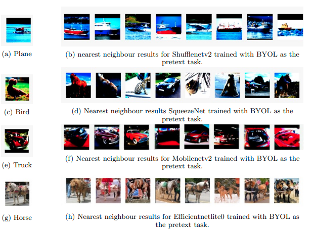

I am currently pursuing my Masters in CS from University of Illinois Urbana-Champaign. (Graduation: December 2023)
Email | CV | Google Scholar | Github | LinkedIn

Research
I'm interested in generative AI in computer vision, and Natural Language Processing.
2021

Self-Supervised Visual Representation Learning Using Lightweight Architectures
Prathamesh Sonawane, Sparsh Drolia, Saqib Shamsi, Bhargav Jain
We study the performance of various self-supervised techniques on lightweight architectures.